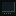

Power -> racks -> RackCoin -> Crypto Exchange. Fill a Server Rack with modules, power it with Power Cable, link it to an Uplink Router with Fiber Cable, and keep its front intake below 27 C. Working racks mine RackCoin every second into one shared balance. Open a rack to see its rate or what is wrong, then spend the coin at a Crypto Exchange, or bid it on rarer things at a Darknet Terminal. The Exchange sells nearly everything, but Rackcraft hardware carries a steep premium (components four times, machines six times their value), so building your own stays the cheaper way to grow.
Crypto Exchange
rackcraft:crypto_exchange
Spend the RackCoin your racks have mined. Pick a tab, then click an offer to buy it; Shift-click buys ten. The screen shows your balance and live mining rate, and hovering an offer you can't afford yet tells you how long until you can. It needs no power or cables: every rack in the world pays into one shared balance. At first it is the basic counter: materials, and hardware up to GPU Blades. Prime Brokerage (R&D) opens the high-tier stock (better modules, nuclear materials, late machines, netherite and rare goods) at a steep premium. Prices are live: every one you buy raises the next (1% on the basic counter, 3% for high-tier stock), and they ease back over an in-game day, so a handful is cheap and a few hundred at once is not. Drones and Auto-Buyers pay the same prices.
Crafting
Glass pane
Glass pane
Glass pane
Emerald

Darknet Terminal
rackcraft:darknet_terminal
An auction house for things the Exchange won't sell: enchanted books, spawn eggs, empty spawners (right-click one with a spawn egg), elytras, nether stars, the odd dragon egg, and now and then anything else. Four auctions run at a time; more listing slots cost a fortune. Bid with RackCoin: a bid is paid when you place it and refunded if you're outbid. Rival bidders want the lot too and answer within seconds. An auction closes one minute after the first player bid, or after fifteen minutes if nobody bids, and the highest bidder wins. Won lots ship to the terminal's dead drop two to six minutes later. It needs no power: the seven proxies are someone else's problem.